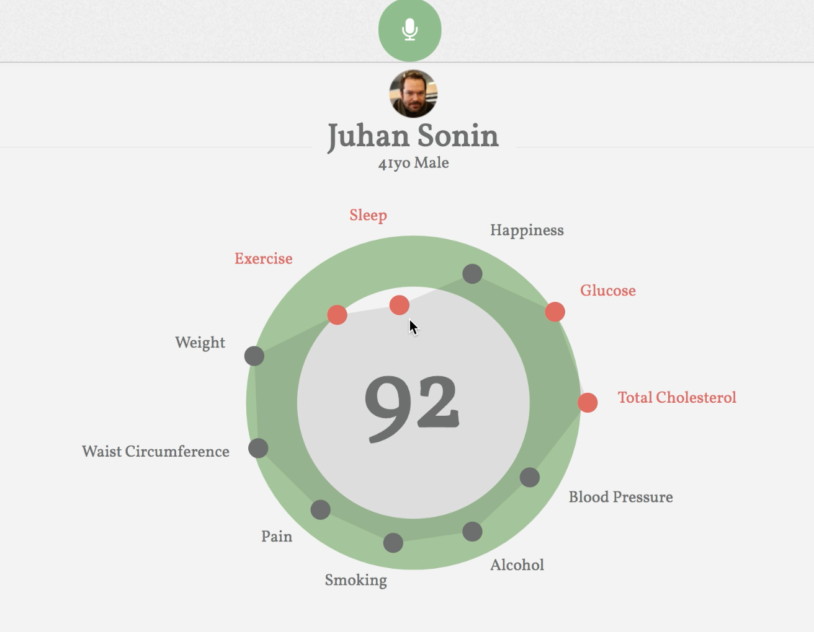

hGraph V1.0
hGraph (Health Graph) is a standardized visual representation of a patient's health status, designed to increase awareness of the individual's factors that can affect one's overall health. hGraph displays a complete overview of an individual's health. This single picture method provides a person with a significant understanding of his or her total well being because it compiles multiple metrics into a unified graph that can be viewed at a glance.
hGraph users can easily identify which metrics exist in a normal range versus those that may be too high or low. It effectively conveys important data at sizes both large and small, and enables users to recognize condition patterns. With hGraph, patients can track their own health and healthcare providers can learn to recognize representative visualizations for common diseases.
My contibution to hGraph is enabling voice interactions that allow the user to input their data through voice to update values. This way, a user could simply speak to their device to record their values for the day and see visual changes. This was done through using Google's DialogFlow, an API for creating conversational interactions. Voice data is transcribed and parsed using DialogFlow which returns a JSON. The JSON is then parsed for elements of interest and updates the data for the graph. For more detail, please go to the GitHub project link. A video demo can be seen here.